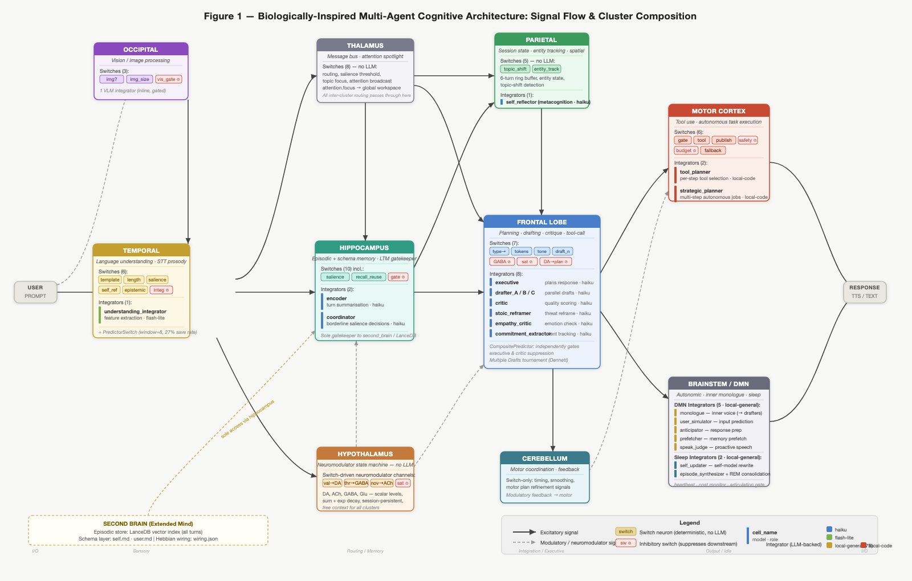

Unpublished technical report, May 2026
We describe the design, implementation, and early empirical observations of a biologically-inspired cognitive architecture whose central hypothesis is that implementing the affective substrate of cognition — persistent emotional state that modulates computation rather than merely framing output — produces a system that develops differently over time. The architecture maps explicitly onto regions of the human brain, with a two-tier chemical signaling system (fast neuromodulators and slow hormones) coordinating a fixed set of heterogeneous, region-specific agents rather than a central planner. Language model calls are treated as expensive convergence-zone events, with the majority of per-turn computation delegated to cheap, deterministic routing logic. The architecture draws from predictive processing theory (Friston, Clark), dual-process theory (Kahneman), Global Workspace Theory (Baars, Dehaene), Dennett's Multiple Drafts model, and Clark and Chalmers' extended mind hypothesis. The current dataset covers 350 turns across 60 sessions. The system operates within its designed cost envelope (mean 3.23 LLM calls per turn against a target of 3–5), demonstrates functional neuromodulator dynamics, and produces measurable predict-and-surprise gating saves (26.0% of turns). Memory recall is active on 33.1% of turns. Two Hebbian sleep consolidation passes provide first evidence of edge weight reinforcement. Fourteen distinct emotional states have been observed; a fragmented-attention state is the third most common at 9% and correlates with a recognizable low-reward neuromodulator signature. Acetylcholine declines across the dataset from early to late sessions — a longitudinal signal whose most plausible interpretation is that 60 sessions of history has made the system's conversational environment progressively more familiar. Several mechanisms remain too nascent to evaluate, and the central question of whether multi-agent structure improves on a single well-prompted model has not yet been subjected to controlled comparison. We present the architecture, its philosophical commitments, and an honest account of what the data does and does not indicate.
The dominant paradigm in contemporary multi-agent LLM systems is orchestration: a planner decomposes tasks, dispatches specialized agents, and synthesizes their outputs. This is efficient for clearly-structured workflows but is architecturally at odds with what we know about biological cognition. Real brains have no central orchestrator. Intelligence in biological systems emerges from the interaction of modular, largely autonomous processing regions, bound by shared chemical signaling, mediated by prediction error, and shaped by experience-dependent plasticity.
This project is a prototype of an alternative paradigm: a brain-region-mapped cognitive architecture in which computation is coordinated by neuromodulator dynamics rather than a central planner, and language model calls are reserved for genuine convergence-zone reasoning. It is not an attempt to build artificial general intelligence. It is an attempt to ask a more specific question: can you implement the affective substrate of cognition faithfully enough that emotional state does real computational work — gating processing, shaping memory retrieval, modulating what gets learned — and if so, does the result develop differently over time?
The motivation is experimental rather than immediately practical. In biological brains, affect is not decoration. Neuromodulatory systems — dopamine, acetylcholine, GABA, and their relatives — regulate attention, arousal, inhibitory tone, and synaptic plasticity at the architectural level. They determine what gets attended to, how confidently conclusions are held, and how readily behavior adapts. Existing LLM systems treat emotional register as a prompt property: you can instruct a model to respond warmly or cautiously, but this is style, not state. The hypothesis here is that an architecture with genuine affective dynamics — state that persists across turns, that modulates computation rather than merely framing output — will produce meaningfully different behavior over a long enough window. Whether that difference translates to better performance on technical tasks is a secondary question, and probably not the first place evidence will appear. The more immediate prediction is behavioral continuity: a system that develops something like a stable character through the interaction of experience, emotional state, and plasticity. The cost efficiency that follows from sparse, prediction-gated LLM activation is a consequence of this design, not its goal.
This paper documents the design rationale, the philosophical commitments, the implementation as built, and the early empirical observations. The system is operational but young. Many mechanisms have been implemented but not yet accumulated enough history to produce evaluable evidence. Where we have signal, we report it. Where we do not, we say so explicitly.
The idea of intelligence from interacting simple agents has a 40-year history. Minsky's Society of Mind (1986) proposed the direct ancestor: intelligence as a "society" of simple, mindless agents organized into "agencies." The proposal was influential but never produced a working implementation — the interaction mechanism between agents was described without the mathematics needed to make it work.
Blackboard architectures (HEARSAY-II, BB1, 1970s–90s) were the canonical implementation: multiple knowledge sources reading and writing to a shared workspace. They succeeded on narrow problems (speech recognition, medical diagnosis) but failed to scale. The coordination overhead of many agents sharing a blackboard eventually exceeded the value of their specialization.
SOAR, ACT-R, and related cognitive architectures produced research insights but hit ceilings imposed by hand-engineered module boundaries. Numenta's Hierarchical Temporal Memory produced useful anomaly detection but never generalized to language or broad reasoning.
Generative Agents (Park et al., Stanford, 2023, 2025) are the closest LLM-era prior art. Their simulated communities of LLM-powered agents exhibited believable emergent social behaviors and predicted real survey responses at 85% normalized accuracy. A significant caveat from the same research: behavioral-economic game performance matched simpler demographic baselines at 66%, suggesting that much of the "emergence" came from prompt design rather than from multi-agent interaction. This critique is a consistent thread in the recent literature: when given equal compute, a single well-prompted LLM often matches or exceeds multi-agent systems on raw task quality.
The conclusion we draw from this history is not that multi-agent architectures are unpromising, but that their value proposition requires precision. Multi-agent design earns its cost through legibility (observable internal processing), persistent specialized state (neuromodulators, Hebbian weights), and structural constraints that force behaviors the prompt alone cannot reliably produce (inhibitory circuits, prediction gating, arousal modulation). If the architecture merely adds coordination overhead to what a well-prompted single model would do anyway, it has failed.
Active Inference and the Free Energy Principle (Friston; VERSES AI, 2025) provides the most biologically faithful active research direction for multi-agent systems. Agents minimize prediction error by updating beliefs or acting on the world. Hierarchical multi-agent Active Inference frameworks have been demonstrated in robotics, coordinating multiple predictive agents without central planning. The predict-and-surprise gating mechanism in this system is a direct instantiation of Active Inference at the cluster level.
Predictive Processing (Clark, Surfing Uncertainty; Friston) frames cortical computation as fundamentally predictive: top-down predictions flow downward, bottom-up prediction errors flow upward, and computation is the process of "explaining away surprise." This maps cleanly onto a design where most processing units fire only when their input disagrees with expectation.
Spiking Neural Networks + LLM hybrids (SpikeLLM, NSLLM, 2024–2026) achieve event-driven computation — fire only on meaningful signal — at the intra-model level. NSLLM reports 19× energy efficiency improvements. The architectural principle (spend compute proportional to signal novelty) is the same as this system's, applied at the cluster level rather than the token level.
The closest pattern in the broader literature is neuro-symbolic AI — LLMs wrapped between deterministic control layers (SYNAPSE, AUTOBUS, Pre3, Formal-LLM). These apply the gating principle for task orchestration with auditability in compliance and industrial contexts. No existing published system applies this pattern as a literal brain-region-mapped architecture with neuromodulator dynamics, Hebbian plasticity, hippocampus-gated long-term memory, and predictive processing gating as the primary mechanism of a general-purpose conversational entity — and none frames the central research question as whether genuine affective architecture produces meaningfully different longitudinal behavior. That is the specific contribution this prototype makes.
The architecture is not merely borrowed from biology. Each major design decision maps to an established position in philosophy of mind. Making these commitments explicit does two things: it sharpens each design choice and makes honest what the system is and is not claimed to be.
Functionalism (Putnam, Fodor). The functionalist claim is that what makes something a mental state is not what it's made of, but what it does — the causal role it plays in a system. A belief is a belief because of how it interacts with perception, reasoning, and action, not because it happens to live in biological neurons. This means the same mental state can, in principle, be implemented in silicon, language models, or anything else that plays the same functional role. The entire design rests on this commitment: cluster specifications define inputs, outputs, and state; the substrate that runs them is architecturally irrelevant. The system has been run with three different model backends with no structural change in behavior.
Dual-Process Theory (Kahneman). Cognitive science has long distinguished two modes of thought: fast, automatic, parallel processing that operates below conscious attention, and slow, effortful, deliberate reasoning. Most of cognition is the first kind; the second kind is expensive and gets invoked only when the first signals that something requires more careful handling. In this system, deterministic routing logic is System 1: fast, parallel, cheap, operating constantly. Language model calls are System 2: slow, expensive, invoked only at convergence zones. Predict-and-surprise gating is the explicit mechanism for deciding which mode to engage — stay in System 1 unless something doesn't add up.
Global Workspace Theory (Baars, Dehaene). The theory proposes that the brain's many parallel processing regions mostly operate independently and "unconsciously." A small fraction of neural activity is broadcast to a global workspace — a kind of bulletin board accessible to the whole brain — and only that broadcast activity is available for explicit reasoning or verbal report. A shared message bus with an attention-focus channel implements this directly. Most inter-cluster traffic is local and never integrated; high-salience signals are promoted to the attention channel and become available system-wide.
Multiple Drafts Model (Dennett, Consciousness Explained, 1991). Dennett's challenge to the intuitive picture of consciousness: there is no central observer watching a unified stream. The brain runs many parallel narrative drafts simultaneously, with no single privileged version. What becomes "conscious" is whichever draft survives when it is probed — there is no fact of the matter about what you "really" thought before you were asked. The response drafting tournament instantiates this directly. There is no true response the system intended — there are competing drafts, and the output gate emits whichever survived when the timeout fired. This is the Multiple Drafts model running in code.
Extended Mind Hypothesis (Clark & Chalmers, 1998). The standard assumption is that the mind stops at the skull. Clark and Chalmers argued that if an external resource plays the same functional role as an internal cognitive process — reliably available, automatically endorsed, directly acted upon — then it is constitutive of the mind, not merely a tool for it. The system's long-term memory satisfies these conditions: it is always accessible, its content directly shapes responses, and the system endorses it as its own memory rather than querying it skeptically. One notable extension beyond the original argument: Clark and Chalmers' canonical example assumes an imperfect external store compensating for biological forgetting. This system's external memory is non-degrading. Identity here emerges not from selective forgetting but from learned behavioral weights, neuromodulator baselines, and accumulated self-narrative.
Predictive Processing (Clark, Friston). The dominant contemporary theory of cortical function: rather than passively receiving input and computing a response, the brain is constantly generating predictions and updating them when they fail. Processing is proportional to prediction error — familiar inputs are handled cheaply; surprising ones demand more. Each processing cluster maintains a predictor implementing this directly. Routine turns in familiar conversations spend almost nothing; novel turns invoke language model calls. The design operationalizes the "controlled hallucination" view of perception: the system's default behavior is to emit a predicted response, with actual LLM computation triggered only when prediction fails.
Narrative Self (Dennett, Hume, Locke). Hume argued personal identity is not a thing but a story — a bundle of experiences held together by memory and narrative continuity. Locke located personal identity precisely in memory: what makes you the same person you were yesterday is that you remember being that person. The system maintains a self-model updated during sleep consolidation. With a perfect, non-degrading episodic store and an explicit self-narrative, it has stronger identity continuity than any biological system — whose memory degrades, distorts, and selectively forgets.
Chinese Room (Searle, 1980). The language model calls manipulate symbols. No claim of genuine understanding is made. The system can appear competent without comprehending.
Hard Problem of Consciousness (Chalmers, 1995). No claim of phenomenal consciousness or qualia. The neuromodulator levels are named after their biological analogs because they play functionally analogous roles, not because there is any claim of subjective experience of reward or attention.
Frame Problem (McCarthy & Hayes, 1969). The attention and salience mechanisms are heuristic. Knowing what is relevant in a given moment remains genuinely hard, and no principled solution is claimed here.
The system is built on the premise of constructing functional analogs of mental processes. That is enough to be interesting. It is not enough to be a mind.
Two distinct processing types mirror how real neural tissue works.
Fast routing nodes are deterministic, require no language model, and can run in parallel at negligible cost. They perform gating (deciding whether to spend an LLM call at all), routing (selecting which processing path a turn takes), state-holding (maintaining neuromodulator levels that persist across turns), modulation (accumulating and decaying signals over time), and inhibition (suppressing downstream activation). A meaningful fraction of every cluster's nodes are explicitly inhibitory, mirroring the excitatory-to-inhibitory balance in biological cortex. This is structural cascade prevention: runaway excitation is suppressed by abundant inhibitory wiring rather than by a global budget cap.
Deliberative reasoning nodes are language-model-backed and fire only at convergence zones where genuine context integration is required — language understanding, memory coordination, response drafting, and critical evaluation. The critical constraint: fast nodes deal in signals, deliberative nodes deal in language. Text only appears where reasoning is genuinely required.
Each cluster maintains a short history of what it has seen and what it predicted would follow. When new input arrives, the cluster first fires its prediction. It then compares that prediction against what actually happened.
An emotion-aware veto overrides this gating when the entity or user is in a non-routine emotional state. The rationale is that a statistically valid prediction may be contextually wrong — certain emotional moments deserve fresh attention, not a cached response. Vocal stress detected from speech prosody also triggers bypass.
A more sophisticated predictor in the response-generation cluster extends this to structured predictions: it independently estimates whether the coordination step and the critical evaluation step are each necessary, suppressing either independently when confidence is high.
| Brain Region | Biological Role | Digital Recast |
|---|---|---|
| Frontal lobe | Planning, working memory, movement | Response drafting and critique; parallel draft tournament; tool-call selection |
| Temporal lobe | Language, auditory processing, declarative memory bridging | Language understanding; prosody feature extraction from speech |
| Parietal lobe | Sensory integration, spatial awareness | Session state buffer; entity tracking; topic shift detection |
| Occipital lobe | Visual processing | Vision model for image and screenshot inputs |
| Hippocampus | Memory storage and recall | Episodic and schema memory; sole gatekeeper to long-term storage |
| Hypothalamus | Drives, affect, homeostasis | Nine-channel chemical signaling system (five neuromodulators, four hormones); emotion state output |
| Thalamus | Gatekeeper between subcortex and cortex | Message bus and attention spotlight; routing arbitration |
| Brainstem | Vital autonomic functions | Heartbeat; cost monitor; turn-budget enforcer; output gate |
| PNS | Peripheral I/O | Text and image input; speech-to-text; text-to-speech |

The system implements two tiers of chemical signaling — nine channels total — that function as system-wide tuning parameters, not message streams. All channels are scalar levels maintained by accumulation plus exponential decay, readable by any cluster without an LLM call. They are the mechanism by which the system's state at one turn shapes its processing at the next.
Fast neuromodulators respond within a few turns:
Slow hormones respond over tens to hundreds of turns, acting as the session's long-horizon affective memory:
Cross-channel interactions produce nonlinear dynamics that neither tier alone could generate. Oxytocin buffers cortisol (social bonding reduces chronic stress). Anandamide suppresses arousal overflow. Cortisol amplifies inhibitory tone under chronic stress. These mirror known antagonisms in the neuroendocrine literature.
Dimensional output: all nine channels map to three continuous affective dimensions — valence (pleasantness), arousal (activation), and dominance (agency). These dimensions drive the discrete emotion label via a lookup table of approximately 25 states, with norepinephrine and hormonal overlays applied on top for states like vigilant, connected, withdrawn, and eased.
Short-term memory is the live signal state plus a small ring buffer of recent turns plus current neuromodulator levels.
Long-term memory has three layers:
Only the hippocampus cluster has access to the long-term store. All other clusters request memory through the shared bus. This architectural constraint enforces the biological model and provides a clean audit point for everything the system remembers.
Connections between processing nodes carry weights that change with experience. After each turn, an outcome signal is computed from three sources: how much the reward signal (dopamine) changed during the turn, how the critical evaluator scored the response, and the emotional valence of the user's detected state. Connections that were active during high-outcome turns are strengthened; those active during low-outcome turns are weakened.
A plasticity modulator scales the learning rate: sessions with high reward and high attention produce faster learning than flat or disengaged sessions. A gentle homeostatic decay prevents any connection from locking in permanently. The result is a soft reinforcement mechanism — no explicit RL machinery — that gradually shifts routing preferences, draft selection, and memory recall patterns toward what has worked before.
When multiple response drafts are generated and compared in a single turn, the winning drafter receives additional reinforcement proportional to its margin over the alternatives; losing drafters receive a small penalty. This creates genuine selection pressure between response styles over time.
Default Mode Network (DMN): an idle thinking loop that fires between turns, generating internal monologue, consolidating recent episodes, and simulating likely next inputs. Between-turn thoughts are tagged with their neuromodulator context, emotion label, and a salience flag. High-priority thoughts are explicitly surfaced on next user contact; lower-priority thoughts are encoded into episodic memory tagged for later retrieval via a dedicated recall budget that does not compete with conversation memories. The DMN operates within a defined resource budget — token limits per call, a session-level cap, and concurrency limits — ensuring autonomous activity does not run unbounded. This is William James' stream of consciousness literalized: the entity thinks between conversations, and that thinking shapes its responses.
Metacognition: a self-monitoring process that fires periodically, gated on chemical state, reflecting on behavioral patterns and costs.
Motor cortex: sandboxed tool use — file I/O, web retrieval with injection hardening, and read-only access to the system's own performance data. A self-directed task system extends this with autonomous multi-step job execution: a planning stage produces a strategic plan, an execution loop drives step-by-step implementation, and a reporting stage produces a brief spoken summary and a task card in the UI.
Sleep consolidation: a pass at session end that synthesizes high-salience episodes, updates the self-model, and applies the Hebbian weight update. A second pass processes the session's thought buffer: recurring themes and salient thoughts are forwarded to a language model that identifies preoccupations, connects them to episodic topic clusters, and extracts unresolved open questions. Non-recurring, low-salience thoughts are discarded — mirroring the non-REM downscaling analog in biological sleep.
Deliberate emotional expression: a mechanism that separates performed emotion from authentic chemical state. The system can adopt an expressive register for communicative effect — in voice tone and visual display — without modifying any neuromodulator level. The hypothalamus is untouched. This is the distinction between theatrical affect and felt affect: the system can say something angrily while its inhibitory tone remains low.
All processing is logged to an append-only structured event stream with records for each turn, each predict-and-surprise decision, and each Hebbian update. A browser UI shows real-time cluster activations on a brain diagram, neuromodulator levels, emotion state, and a live plasticity panel. The observability layer is what makes empirical analysis of the system's internal behavior possible and will enable rigorous evaluation as the dataset grows.
The dataset consists of 350 turns across 60 sessions with over 1,000 associated decision records. Sessions average 5.8 turns each. This is a growing dataset at an early stage; all findings should be read as directional indicators rather than statistically robust conclusions.
Mean LLM calls per turn: 3.23 (range 0–9). This is within the designed range of 3–5 for typical turns. The zero minimum confirms that full turns with no language model calls are functional. The maximum of 9 on the most complex turns is consistent with the self-directed task system adding a reporting call at task completion. Mean latency is 8.7 seconds, within the expected range for cloud inference; it is framed as deliberation time rather than lag, with the real-time brain visualization serving as evidence of live processing.
91 of 350 turns (26.0%) produced actual integrator suppression with measurable LLM call savings. An additional 35 turns triggered the predictor but were overridden by the emotion-aware veto, for a total of 126 candidate gating events (36.0% of turns). The saves that do occur are at maximum predictor confidence and are structurally correct — the gating mechanism is working as designed on the inputs where it fires.
Neuromodulator-level suppression of individual routing nodes is also observable in the data — chemistry influencing computation at the finest granularity the architecture permits, distinct from the cluster-level integrator gating.
The 26.0% save rate is consistent with sessions averaging 5.8 turns — within-session predictor history is thin at that length. Longer sessions are the primary lever for approaching the 30–50% design target.
The neuromodulator levels show expected biological-analog behavior across the dataset:
ACh declines across the dataset: the earliest-quintile mean is 0.444 and the latest-quintile mean is 0.386. DA declines in parallel. Both signals moving in the same direction rules out a simple measurement artifact.
The session-end self-model records 60 mood entries. The arc runs: early confident states, then a period of settled activity, then a run of fragmented-attention sessions where dopamine sat at its floor with acetylcholine elevated — high novelty, minimal reward. The arc then recovered through excitement and joy states, through lively and serene, to the most recent entries at settled. The low-DA/high-ACh sessions are a distinct regime: the system was attending to novel inputs without positive reinforcement — exploratory but unrewarding. Two independent signals — turn-level neuromodulator state and session-end self-model synthesis — describe the same trajectory.
A plausible interpretation: familiarity is accumulating. ACh encodes novelty; if sessions increasingly revisit familiar conversational patterns over 60 sessions of history, the novelty signal should attenuate. This is the expected long-run trajectory for a system learning its environment. The topic-uniformity confound has not been controlled and remains a live alternative explanation.
Emotion distribution across all 350 turns: neutral (34%), curious (33%), scattered/fragmented-attention (9%), thoughtful (7%), excitement (5%), confident (3%), alert-curious (2%), with the remaining 7% spread across wistful, joy, lively, serene, settled, content, and engaged. Fourteen distinct states are observed. No negative emotional states appear, consistent with non-hostile session content throughout.
The fragmented-attention state at 9% is the third most common. It maps to a recognizable neuromodulator signature: elevated inhibitory tone with reduced acetylcholine and dopamine near its floor — a kind of internally fragmented attention state. This correlates with the low-DA sessions visible in the mood history. The non-canonical states collectively account for 33% of turns, reflecting a system whose emotional range has broadened with experience.
Memory recall was active on 116 of 350 turns (33.1%). The hippocampus is contributing to roughly one in three turns. A recall-reuse mechanism — detecting when the same memory context was retrieved within the recent turn window and serving the cached result — also appears in the data, a natural consequence of short-session topic continuity. Deferred thoughts from between-turn DMN activity are retrieved via a separate recall budget that does not compete with conversation memories.
Whether recalled episodes are improving response quality remains uncontrolled. The episodic store is young — most episodes are from within the past few days — so long-horizon retrieval quality, the more interesting property, cannot yet be assessed.
The dataset includes two sleep consolidation passes. Both show consistent reinforcement of the same processing pathway — from language understanding through executive coordination to the primary response drafter — with plasticity modulators correctly elevated on engaged sessions. A new pathway appeared as the lead gainer in the second pass, suggesting the system is beginning to weight a different feature axis. Weight changes are small per session and no weakening has occurred yet, as expected at this stage.
Whether this reinforcement will produce a measurable behavioral preference — the system genuinely favouring one response style over others — requires longer observation.
Mean drafter count: 1.10 across 385 drafts. The single-draft norm confirms that arousal-modulated drafter selection is working correctly: most turns are low enough arousal to generate one draft, with multiples reserved for complex or emotionally charged inputs. The efficiency gains from predict-and-surprise gating target overhead steps, not the drafting itself, so draft quality is not affected by gating saves.
The cost model is validated. Mean 3.23 LLM calls per turn is within the designed range. Switch-only fast paths with zero LLM calls are confirmed functional.
Predict-and-surprise gating is stable and producing consistent savings. 26.0% of turns are successfully gated at maximum predictor confidence. Neuromodulator-level suppression of individual routing nodes shows chemistry doing real computational work at the finest granularity the architecture permits.
The neuromodulator dynamics are functional and showing longitudinal behavior. ACh declines from early to late sessions (quintile means 0.444 → 0.386), with DA softening in parallel. Two independent signals are in agreement. If this reflects genuine familiarity accumulation rather than topic-content bias, it is the first evidence of long-horizon environmental adaptation in the neuromodulator system.
Memory recall is active and stable. Contributing to 33.1% of turns means the memory system is a live participant in the pipeline, not merely an accumulating store.
The philosophical commitments are structurally implemented. The response drafting tournament is a Multiple Drafts engine in the Dennett sense. The attention bus topic is a Global Workspace. Predict-and-surprise gating is Active Inference at cluster level. The implementation fidelity is genuine.
Predict-and-surprise reaching its full efficiency target. The 26.0% save rate is consistent with session-length constraints. Longer sessions are the primary lever; the plateau does not indicate the mechanism has stopped working.
Hebbian plasticity producing emergent behavioral style. Two consolidation passes show consistent reinforcement of the same pathway. The theoretical prediction — that preferred response styles, recall paths, and routing orderings will emerge from reinforcement over many sessions — is testable but not yet tested. This is a months-long experiment.
The emotion evolution producing differentiated behavior. 14 distinct states are observed. Whether authentic emotional state or deliberate expressive performance produces measurably different response quality on matched inputs requires controlled comparison not yet conducted.
DMN, metacognition, and sleep consolidation effects. All three are operational. Their value requires session durations and longitudinal continuity not yet accumulated.
Whether multi-agent structure produces better responses than a single well-prompted LLM. This is the central open question. The eval framework has the infrastructure to test it but controlled comparisons have not been run at scale. The honest prior from the literature is that multi-agent structure adds legibility and behavioral structure but does not reliably beat a single good model on raw response quality. Claiming otherwise requires evidence we do not yet have.
Whether the ACh and emotion trends reflect genuine baseline drift or topic bias. The convergence of two independent signals is suggestive, but session content has been uniformly self-referential. Controlled session diversity would separate signal from confound.
Long-horizon retrieval quality. The episodic store is too young to test whether vector retrieval surfaces genuinely useful long-past context or primarily returns recent sessions by proximity.
Several failure modes were anticipated in the original design. Their current status:
Cluster over-reach. Architectural constraints restrict each cluster's message subscriptions to its own domain plus shared broadcast channels. Enforced at the framework level. No violation observed.
Echo chambers and cascade storms. Hop-count limits, per-topic activation decay, per-node rate limits, and a turn-budget enforcer are all implemented. No runaway cascade has been observed in production use.
Silent system (thresholds too high, nothing fires). An output gate fires on timeout regardless, guaranteeing a response. A template-match path guarantees trivial-input handling. Not observed.
Consensus on garbage. The critic and multi-draft tournament provide some protection, but if all active drafters share a systematic hallucination, the architecture has no principled remedy. This is a known open problem in multi-agent systems generally.
Latency. Mean 8.7 seconds is workable but not conversational. Shorter-path turns achieve sub-second to 2-second latency; complex multi-drafter turns drive the mean up. This is a fundamental constraint of sequential LLM calls on the critical path.
This system makes claims that can be evaluated against each of its philosophical commitments.
Functionalism: The system's operation is genuinely substrate-independent. The same conversation has been run with three different language model backends with no structural change in behavior. This is functionalism in practice.
Dual-Process: The routing/reasoning distinction cleanly separates fast-and-automatic from slow-and-deliberate processing. The system literally does not reason about routine inputs; it pattern-matches. It literally does reason about novel or high-surprise inputs.
Global Workspace: The message bus with attention-focus channel implements a workspace in the Baars/Dehaene sense: local processing is invisible to other clusters, and promotion to the attention channel makes content available system-wide. This is architectural, not metaphorical.
Multiple Drafts: The drafting tournament is genuinely draft-parallel. Multiple reasoning nodes write candidate responses without knowledge of each other's drafts. The critic scores them. The output gate emits the winner. There is no "true response" that was waiting to be discovered — there are only the drafts that existed when the gate fired.
Extended Mind: The long-term memory satisfies Clark and Chalmers' coupling and availability conditions: it is reliably available, automatically endorsed, and directly accessible. The system's responses are demonstrably shaped by its long-term memory on 33.1% of turns. The functional loop is closed.
This system represents a genuine implementation of biologically-inspired cognitive architecture at a scale and fidelity not previously published in the LLM multi-agent literature. Its core design claims — sparse LLM activation at convergence zones only, neuromodulator dynamics as free persistent state, hippocampus-gated memory with vector episodic store, Hebbian plasticity in behavioral weights, predict-and-surprise gating from Active Inference — are not merely described but implemented and operational.
The dataset (350 turns, 60 sessions) supports the following conclusions:
The following require substantially more data: Hebbian plasticity producing observable behavioral preferences, DMN and metacognition effects, empathy and theory-of-mind pathways in emotionally diverse sessions, distinguishing genuine ACh baseline drift from topic-content bias, and long-horizon retrieval quality.
The central open question — whether the multi-agent architecture produces better responses than a single well-prompted LLM given equal compute — remains unanswered and should be the primary focus of next-phase evaluation.
The most honest characterization of the current state: the substrate is active, behavioral patterns are accumulating, and the system is operational across all designed mechanisms. The ACh longitudinal decline across 60 sessions is the most substantive empirical signal in the dataset — a longitudinal trend, not a within-session artifact, suggesting the neuromodulator system is tracking genuine environmental change. The emotional vocabulary is diverse, with low-DA fragmented-attention sessions emerging as a recognizable regime. None of these yet constitute "interesting emergent behavior" in the strong sense the design literature uses — but the evidence that the mechanisms are doing real computational work, not merely executing fixed logic, is present in the data.
The system is a working research instrument. The experiment is ongoing.
Baars, B. (1988). A Cognitive Theory of Consciousness. Cambridge University Press.
Barrett, L. F. (2017). How Emotions Are Made. Houghton Mifflin Harcourt.
Chalmers, D. (1995). Facing up to the problem of consciousness. Journal of Consciousness Studies, 2(3), 200–219.
Clark, A. (2015). Surfing Uncertainty: Prediction, Action, and the Embodied Mind. Oxford University Press.
Clark, A., & Chalmers, D. (1998). The extended mind. Analysis, 58(1), 7–19.
Dehaene, S., Changeux, J.-P., & Naccache, L. (2011). The global neuronal workspace model of conscious access. Neuron, 70(2), 187–201.
Dennett, D. (1991). Consciousness Explained. Little, Brown.
Friston, K. (2010). The free-energy principle: A unified brain theory? Nature Reviews Neuroscience, 11(2), 127–138.
Kahneman, D. (2011). Thinking, Fast and Slow. Farrar, Straus and Giroux.
Lazarus, R. S. (1991). Emotion and Adaptation. Oxford University Press.
Minsky, M. (1986). The Society of Mind. Simon & Schuster.
Park, J. S., et al. (2023). Generative agents: Interactive simulacra of human behavior. UIST 2023.
Putnam, H. (1967). Psychological predicates. In Capitan, W. H., & Merrill, D. D. (Eds.), Art, Mind, and Religion. University of Pittsburgh Press.
Rosenthal, D. (1997). A theory of consciousness. In Block, N., Flanagan, O., & Güzeldere, G. (Eds.), The Nature of Consciousness. MIT Press.
Searle, J. (1980). Minds, brains, and programs. Behavioral and Brain Sciences, 3(3), 417–424.